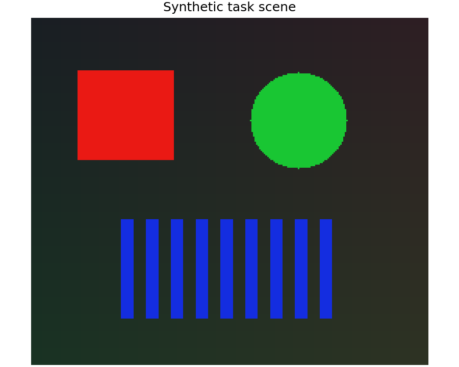
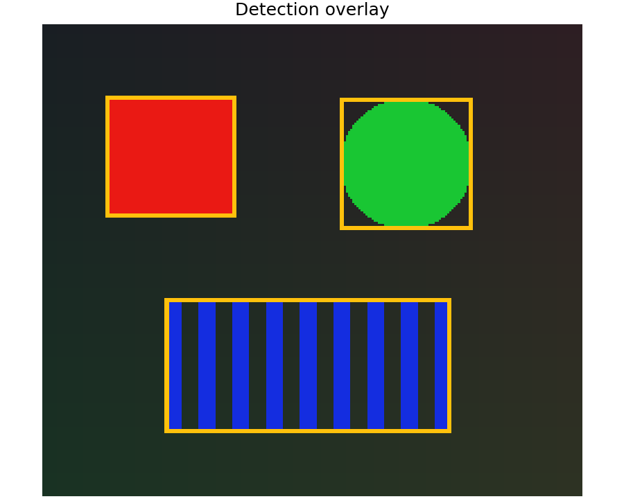
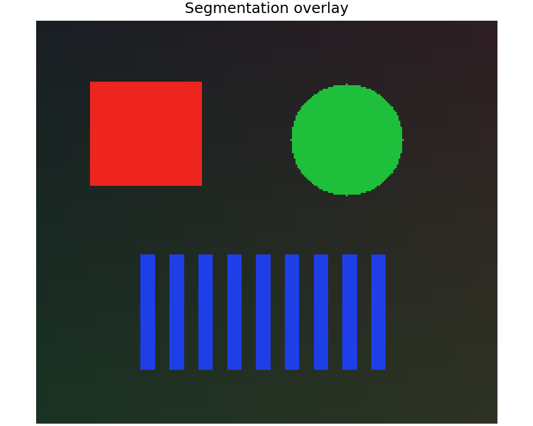
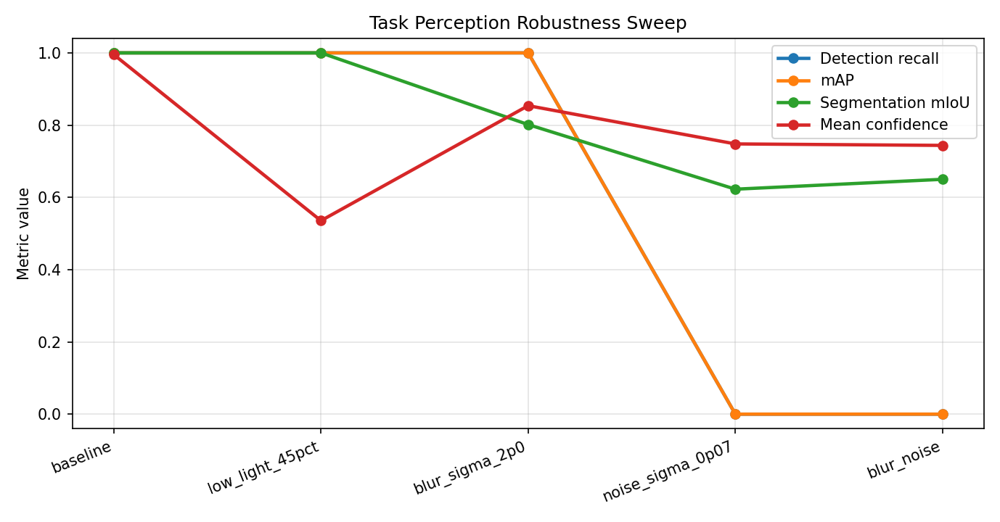
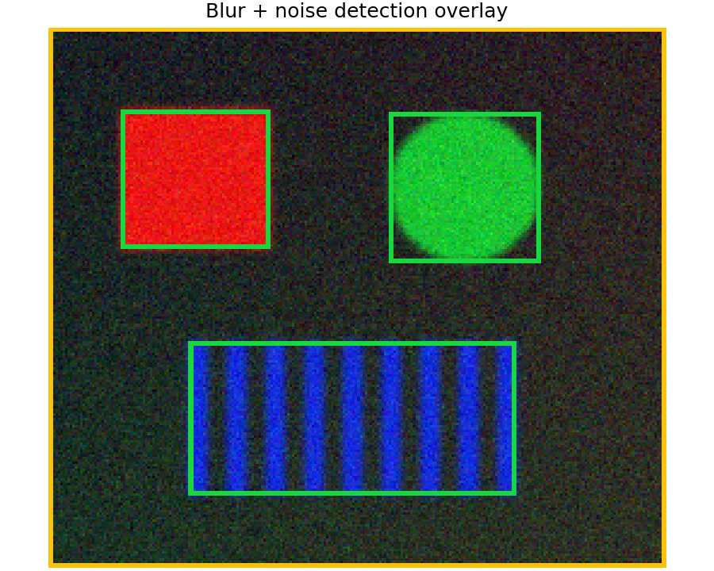

Task Perception Detection And Segmentation Report
This report is the downstream perception layer requested for object detection and segmentation. It is separate from the human-visible image-quality perception report and focuses on task decisions after camera/ISP degradation.
Architecture
task_perception.py is model-agnostic. A detector or segmenter is any callable that accepts an RGB image and returns boxes or masks. The package then normalizes outputs, computes metrics, renders overlays, and runs robustness sweeps.
Heavy models such as YOLO, Detectron, or SAM are intentionally not core dependencies. They should be optional adapters on top of this metric/report layer.
Configurable Model Profiles
These profiles can instantiate optional model adapters when the corresponding third-party package and weights are available. The core report below still uses a deterministic color-threshold detector so unit tests stay fast and dependency-free.
| Profile | Backend | Task | Model ID | Install |
|---|---|---|---|---|
| custom_callable | callable | detection_segmentation | None | custom callable |
| sam_vit_b_automatic | sam_automatic | segmentation | sam_vit_b | pip install segment-anything torch |
| torchvision_fasterrcnn_resnet50_fpn_v2_coco | torchvision_detection | detection | fasterrcnn_resnet50_fpn_v2 | pip install torch torchvision |
| torchvision_maskrcnn_resnet50_fpn_v2_coco | torchvision_detection | detection_segmentation | maskrcnn_resnet50_fpn_v2 | pip install torch torchvision |
| transformers_detr_resnet50_coco | transformers_object_detection | detection | facebook/detr-resnet-50 | pip install transformers torch pillow |
| transformers_mask2former_ade20k | transformers_segmentation | segmentation | facebook/mask2former-swin-small-ade-semantic | pip install transformers torch pillow |
| ultralytics_yolo11n_bytetrack | ultralytics_yolo | tracking | yolo11n.pt | pip install ultralytics lap |
| ultralytics_yolo11n_classification | ultralytics_yolo | classification | yolo11n-cls.pt | pip install ultralytics lap |
| ultralytics_yolo11n_detection | ultralytics_yolo | detection | yolo11n.pt | pip install ultralytics lap |
| ultralytics_yolo11n_obb | ultralytics_yolo | oriented_detection | yolo11n-obb.pt | pip install ultralytics lap |
| ultralytics_yolo11n_pose | ultralytics_yolo | pose | yolo11n-pose.pt | pip install ultralytics lap |
| ultralytics_yolo11n_segmentation | ultralytics_yolo | detection_segmentation | yolo11n-seg.pt | pip install ultralytics lap |
Downloaded YOLO11 Weights
| Model | Profile | Size MB | Path |
|---|---|---|---|
| yolo11n.pt | ultralytics_yolo11n_detection | 5.354 | /Users/seongcheoljeong/.cache/pyisetcam/task_perception/yolo/yolo11n.pt |
| yolo11n-seg.pt | ultralytics_yolo11n_segmentation | 5.896 | /Users/seongcheoljeong/.cache/pyisetcam/task_perception/yolo/yolo11n-seg.pt |
| yolo11n-cls.pt | ultralytics_yolo11n_classification | 5.522 | /Users/seongcheoljeong/.cache/pyisetcam/task_perception/yolo/yolo11n-cls.pt |
| yolo11n-pose.pt | ultralytics_yolo11n_pose | 5.966 | /Users/seongcheoljeong/.cache/pyisetcam/task_perception/yolo/yolo11n-pose.pt |
| yolo11n-obb.pt | ultralytics_yolo11n_obb | 5.527 | /Users/seongcheoljeong/.cache/pyisetcam/task_perception/yolo/yolo11n-obb.pt |
Phase 1: Detection And Segmentation Metrics
| Metric | Value |
|---|---|
| Detection precision | 1 |
| Detection recall | 1 |
| Detection F1 | 1 |
| Detection AP@0.50 | 1 |
| Detection AP@0.75 | 1 |
| Detection mAP | 1 |
| Segmentation precision | 1 |
| Segmentation recall | 1 |
| Segmentation mean IoU | 1 |
| Segmentation boundary F1 | 1 |



Phase 2: Robustness Sweep
The sweep perturbs the same input image with low light, blur, noise, and blur+noise. This is the camera/ISP-facing evidence: task scores should be tracked across image-quality changes, not only on a clean input.
| Case | Detections | Mean score | Recall | mAP | Segmentation mIoU |
|---|---|---|---|---|---|
| baseline | 3 | 0.9953 | 1 | 1 | 1 |
| low_light_45pct | 3 | 0.5355 | 1 | 1 | 1 |
| blur_sigma_2p0 | 3 | 0.8539 | 1 | 1 | 0.8015 |
| noise_sigma_0p07 | 3 | 0.748 | 0 | 0 | 0.6227 |
| blur_noise | 3 | 0.7439 | 0 | 0 | 0.6501 |


Implemented Public API
Core functions: bbox_iou, mask_iou, detection_metrics, mean_average_precision, segmentation_metrics, boundary_f1_score, run_task_detector, run_task_segmenter, task_score_by_stage, and task_perception_sweep.
Overlay and annotation helpers: render_detection_overlay, render_segmentation_overlay, annotations_to_bboxes, and annotations_to_masks.